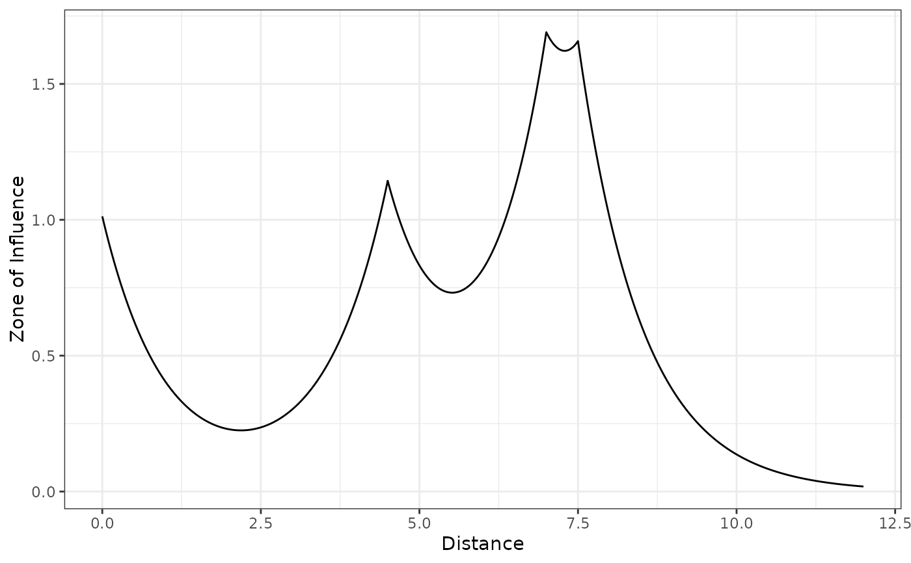
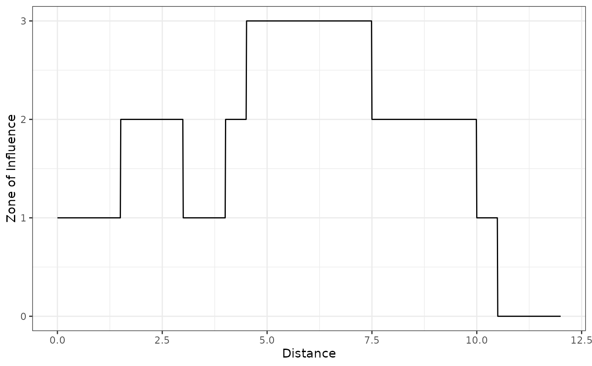
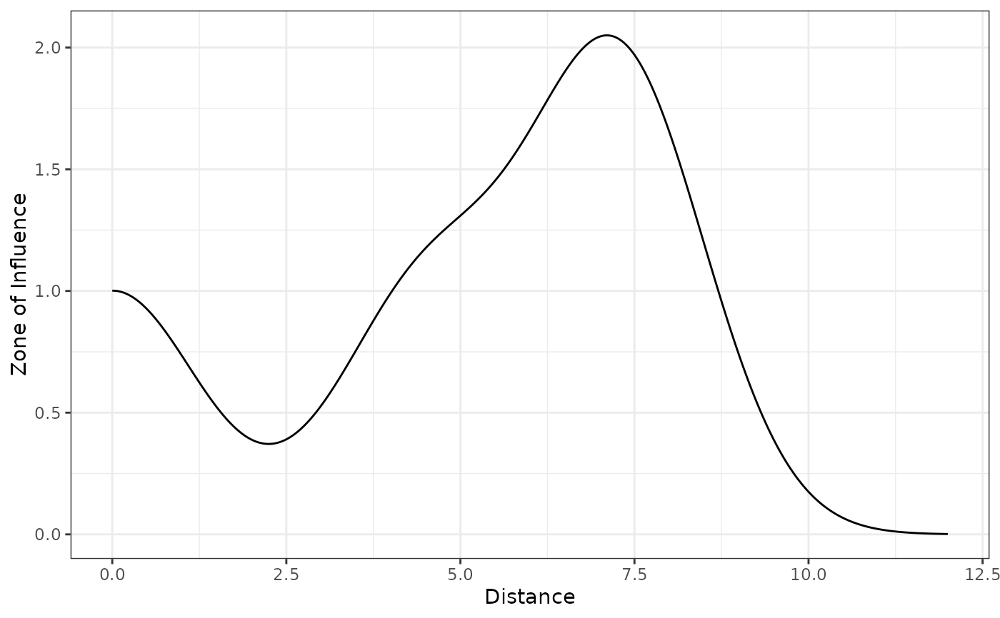
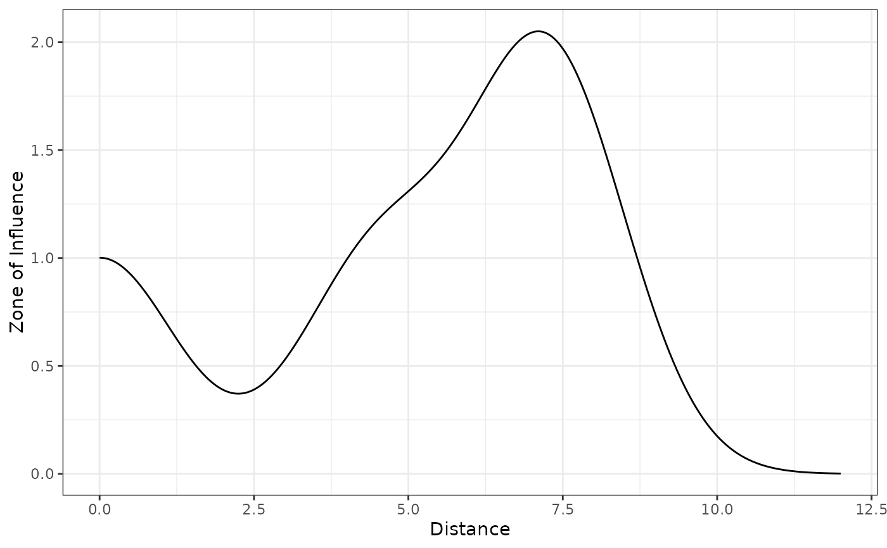

Plot the functions for the nearest and cumulative zone of influence in 1 dimension
Source:R/plot_zoi1d.R
plot_zoi1d.RdPlots the functions to represent the zone of influence (ZOI) in 1 dimensional space, for illustration.
When there is more than one value for points (the location of infrastructure
or sources of disturbance), two metrics might be plotted: the ZOI of the nearest feature or the
cumulative ZOI. The ZOI of the nearest feature corresponds to the maximum ZOI value from all
infrastructure at each position. The cumulative ZOI corresponds to the sum of the ZOI
of all infrastructure at each position.
Arguments
- points
[numeric]
Vector of values in the x axis where the infrastructure are located, in 1 dimension (more broadly, the location of sources of disturbance or spatial variables, or the point of origin of the ZOI functions).- radius
[numeric(1)]
Radius of the zone of influence (ZOI), the distance at which the ZOI vanishes or goes below a given minimum limit value. See zoi_functions for details.- fun
[function]
A decay function that represents the Zone of Influence (ZOI). Different functions might represent different shapes for the decay of the ZOI. See zoi_functions for some examples.- zoi_metric
[character(1)="nearest"]{"nearest", "cumulative"}
Which metric of zone of influence should be plotted. If"nearest"(default), the ZOI of the nearest feature is plotted. If"cumulative", the cumulative ZOI is plotted.- range_plot
[numeric(2)=c(0,12)]
A vectorc(xmin, xmax)with the x range of the ZOI plot.- step
[numeric(1)=0.01]
Size of the step increment used to define the series of x positions for which the ZOI is computed, within the x range defined byrange_plot.- na.rm
[logical(1)=TRUE]
ShouldNAvalues be removed when computing either the sum (for the cumulative ZOI) or the maximum (for the ZOI of the nearest feature)?- return_df
[logical(1)=FALSE]
If TRUE, adata.framewithxvalues and their corresponding ZOI values is returned, besides the plot.- ...
Additional parameters passed to the ZOI decay function
fun.
Value
A ggplot object with the nearest or cumulative influence plot.
If return_df = TRUE, it returns a list with the ggplot object and a data.frame with
values for x (position in 1d space) and y (ZOI value).
Details
In practice, the plot_zoi1d() computes the ZOI value for each feature
whose locations in 1 dimension are defined by points and calculates the maximum
(ZOI of the nearest) or sum (cumulative ZOI) of all values. This is done
for a series of points in 1 dimensional space in the range range_plot (with
steps defined by step) and plotted.
To add: options for normalization, prob etc.
Examples
# one point, exponential decay
plot_zoi1d(0, radius = 3, zoi_limit = 0.05,
fun = exp_decay, range_plot = c(0, 5), zoi_metric = "nearest")
# exponential decay
points <- c(0, 4.5, 7, 7.5)
plot_zoi1d(points, radius = 3, fun = exp_decay, range_plot = c(0, 12),
zoi_metric = "nearest")
plot_zoi1d(points, radius = 3, fun = exp_decay, range_plot = c(0, 12),
zoi_metric = "cumulative")

# threshold
plot_zoi1d(points, radius = 3, fun = threshold_decay, range_plot = c(0, 12),
zoi_metric = "nearest")
plot_zoi1d(points, radius = 3, fun = "step_decay", range_plot = c(0, 12),
zoi_metric = "cumulative")

# linear
plot_zoi1d(points, radius = 3, fun = bartlett_decay, range_plot = c(0, 12),
zoi_metric = "nearest")
plot_zoi1d(points, radius = 3, fun = "linear_decay", range_plot = c(0, 12),
zoi_metric = "cumulative")
 # gaussian
plot_zoi1d(points, radius = 3, fun = gaussian_decay, range_plot = c(0, 12),
zoi_metric = "nearest")
plot_zoi1d(points, radius = 3, fun = "half_norm_decay", range_plot = c(0, 12),
zoi_metric = "cumulative", return_df = TRUE) # also return the data.frame
#> $zoi_plot

#>
#> $zoi_df
#> # A tibble: 1,201 × 2
#> x y
#> <dbl> <dbl>
#> 1 0 1.00
#> 2 0.01 1.00
#> 3 0.02 1.00
#> 4 0.03 1.00
#> 5 0.04 1.00
#> 6 0.05 1.00
#> 7 0.06 1.00
#> 8 0.07 1.00
#> 9 0.08 0.999
#> 10 0.09 0.999
#> # ℹ 1,191 more rows
#>
# gaussian
plot_zoi1d(points, radius = 3, fun = gaussian_decay, range_plot = c(0, 12),
zoi_metric = "nearest")
plot_zoi1d(points, radius = 3, fun = "half_norm_decay", range_plot = c(0, 12),
zoi_metric = "cumulative", return_df = TRUE) # also return the data.frame
#> $zoi_plot

#>
#> $zoi_df
#> # A tibble: 1,201 × 2
#> x y
#> <dbl> <dbl>
#> 1 0 1.00
#> 2 0.01 1.00
#> 3 0.02 1.00
#> 4 0.03 1.00
#> 5 0.04 1.00
#> 6 0.05 1.00
#> 7 0.06 1.00
#> 8 0.07 1.00
#> 9 0.08 0.999
#> 10 0.09 0.999
#> # ℹ 1,191 more rows
#>